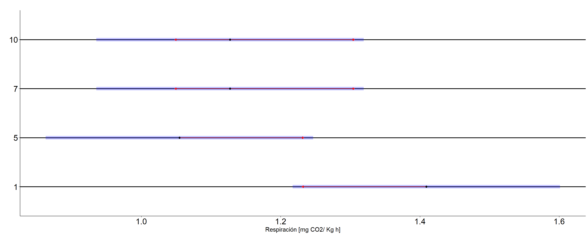
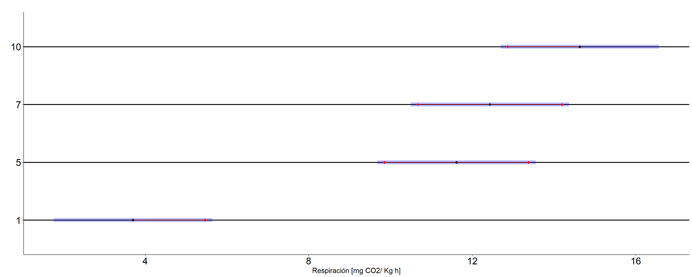
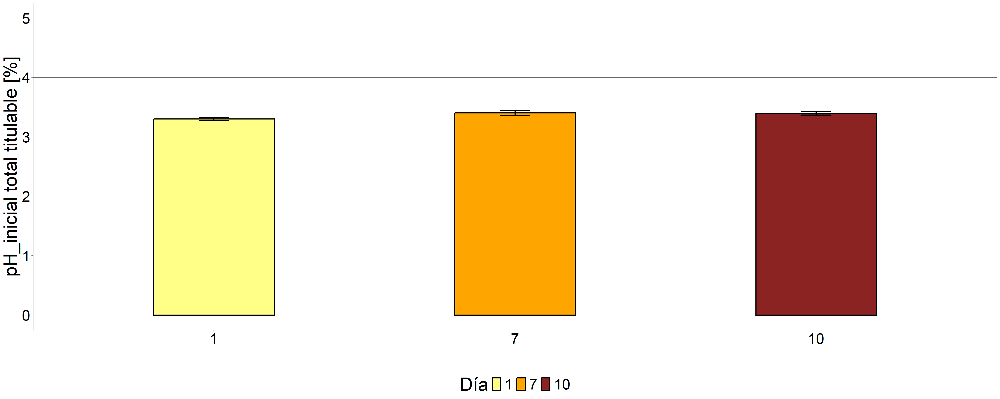
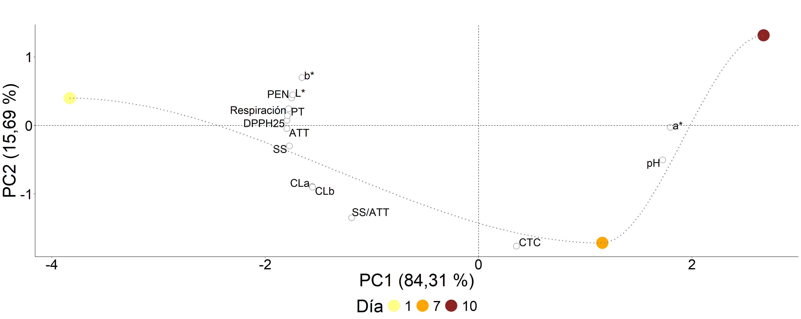

Ensayo 8
Conservación a 1°C
Respiración
Tabla resumen
## # A tibble: 4 × 4
## `Día` n Mean_resp sd_resp
## <fct> <int> <dbl> <dbl>
## 1 1 3 28.0 6.01
## 2 5 3 8.58 4.12
## 3 7 3 23.8 4.94
## 4 10 2 23.0 1.64Modelo
## lm(formula = respiracion ~ `Día`, data = data_resp)Análisis de regresión
## Analysis of Variance Table
##
## Response: respiracion
## Df Sum Sq Mean Sq F value Pr(>F)
## `Día` 3 641.7145 213.90482 9.49642 0.0072991 **
## Residuals 7 157.6735 22.52478
## ---
## Signif. codes: 0 '***' 0.001 '**' 0.01 '*' 0.05 '.' 0.1 ' ' 1## $emmeans
## Día emmean SE df lower.CL upper.CL
## 1 28.04937915 2.74012036 7 21.57002409 34.5287342
## 5 8.57807341 2.74012036 7 2.09871836 15.0574285
## 7 23.77439655 2.74012036 7 17.29504149 30.2537516
## 10 22.99332935 3.35594836 7 15.05777247 30.9288862
##
## Confidence level used: 0.95
##
## $contrasts
## contrast estimate SE df t.ratio p.value
## Día1 - Día5 19.47130573 3.87511538 7 5.025 0.0064
## Día1 - Día7 4.27498260 3.87511538 7 1.103 0.6991
## Día1 - Día10 5.05604980 4.33251070 7 1.167 0.6640
## Día5 - Día7 -15.19632313 3.87511538 7 -3.922 0.0231
## Día5 - Día10 -14.41525594 4.33251070 7 -3.327 0.0489
## Día7 - Día10 0.78106719 4.33251070 7 0.180 0.9977
##
## P value adjustment: tukey method for comparing a family of 4 estimates
Firmeza
Tabla resumen
## # A tibble: 4 × 4
## `Día` n Mean_firmeza sd_firmeza
## <fct> <int> <dbl> <dbl>
## 1 1 22 1.41 0.540
## 2 5 22 1.05 0.505
## 3 7 22 1.13 0.412
## 4 10 22 1.13 0.322Modelo
## lm(formula = Firmeza ~ `Día`, data = data_fisico)Análisis de la varianza
## Analysis of Variance Table
##
## Response: Firmeza
## Df Sum Sq Mean Sq F value Pr(>F)
## `Día` 3 1.623182 0.5410606 2.63932 0.05477 .
## Residuals 84 17.220000 0.2050000
## ---
## Signif. codes: 0 '***' 0.001 '**' 0.01 '*' 0.05 '.' 0.1 ' ' 1## $emmeans
## Día emmean SE df lower.CL upper.CL
## 1 1.40909091 0.0965307299 84 1.217128966 1.60105285
## 5 1.05454545 0.0965307299 84 0.862583512 1.24650740
## 7 1.12727273 0.0965307299 84 0.935310785 1.31923467
## 10 1.12727273 0.0965307299 84 0.935310785 1.31923467
##
## Confidence level used: 0.95
##
## $contrasts
## contrast estimate SE df t.ratio p.value
## Día1 - Día5 0.354545455 0.136515067 84 2.597 0.0531
## Día1 - Día7 0.281818182 0.136515067 84 2.064 0.1733
## Día1 - Día10 0.281818182 0.136515067 84 2.064 0.1733
## Día5 - Día7 -0.072727273 0.136515067 84 -0.533 0.9509
## Día5 - Día10 -0.072727273 0.136515067 84 -0.533 0.9509
## Día7 - Día10 0.000000000 0.136515067 84 0.000 1.0000
##
## P value adjustment: tukey method for comparing a family of 4 estimates
Colorimetría
L*
Tabla resumen
## # A tibble: 4 × 4
## `Día` n Mean_L_color sd_L_color
## <fct> <int> <dbl> <dbl>
## 1 1 24 60.6 4.50
## 2 5 24 56.1 7.55
## 3 7 24 54.0 6.44
## 4 10 24 53.4 4.76Modelo
## lm(formula = L_color ~ `Día`, data = data_fisico)Análisis de la varianza
## Analysis of Variance Table
##
## Response: L_color
## Df Sum Sq Mean Sq F value Pr(>F)
## `Día` 3 770.173 256.72446 7.26176 0.0002 ***
## Residuals 92 3252.471 35.35294
## ---
## Signif. codes: 0 '***' 0.001 '**' 0.01 '*' 0.05 '.' 0.1 ' ' 1## $emmeans
## Día emmean SE df lower.CL upper.CL
## 1 60.5962500 1.21368828 92 58.1857603 63.0067397
## 5 56.1079167 1.21368828 92 53.6974270 58.5184063
## 7 53.9733333 1.21368828 92 51.5628437 56.3838230
## 10 53.3833333 1.21368828 92 50.9728437 55.7938230
##
## Confidence level used: 0.95
##
## $contrasts
## contrast estimate SE df t.ratio p.value
## Día1 - Día5 4.48833333 1.71641442 92 2.615 0.0502
## Día1 - Día7 6.62291667 1.71641442 92 3.859 0.0012
## Día1 - Día10 7.21291667 1.71641442 92 4.202 0.0004
## Día5 - Día7 2.13458333 1.71641442 92 1.244 0.6009
## Día5 - Día10 2.72458333 1.71641442 92 1.587 0.3908
## Día7 - Día10 0.59000000 1.71641442 92 0.344 0.9859
##
## P value adjustment: tukey method for comparing a family of 4 estimates
a*
Tabla resumen
## # A tibble: 4 × 4
## `Día` n Mean_a_color sd_a_color
## <fct> <int> <dbl> <dbl>
## 1 1 24 3.70 3.35
## 2 5 24 11.6 4.84
## 3 7 24 12.4 6.55
## 4 10 24 14.6 3.72
Modelo
## lm(formula = a_color ~ `Día`, data = data_fisico)Análisis de la varianza
## Analysis of Variance Table
##
## Response: a_color
## Df Sum Sq Mean Sq F value Pr(>F)
## `Día` 3 1636.957 545.6524 23.8719 0.000000000016295 ***
## Residuals 92 2102.892 22.8575
## ---
## Signif. codes: 0 '***' 0.001 '**' 0.01 '*' 0.05 '.' 0.1 ' ' 1## $emmeans
## Día emmean SE df lower.CL upper.CL
## 1 3.7012500 0.975908103 92 1.76301227 5.63948773
## 5 11.6129167 0.975908103 92 9.67467894 13.55115440
## 7 12.4304167 0.975908103 92 10.49217894 14.36865440
## 10 14.6295833 0.975908103 92 12.69134560 16.56782106
##
## Confidence level used: 0.95
##
## $contrasts
## contrast estimate SE df t.ratio p.value
## Día1 - Día5 -7.91166667 1.38014247 92 -5.732 <.0001
## Día1 - Día7 -8.72916667 1.38014247 92 -6.325 <.0001
## Día1 - Día10 -10.92833333 1.38014247 92 -7.918 <.0001
## Día5 - Día7 -0.81750000 1.38014247 92 -0.592 0.9342
## Día5 - Día10 -3.01666667 1.38014247 92 -2.186 0.1349
## Día7 - Día10 -2.19916667 1.38014247 92 -1.593 0.3874
##
## P value adjustment: tukey method for comparing a family of 4 estimates
b*
Tabla resumen
## # A tibble: 4 × 4
## `Día` n Mean_b_color sd_b_color
## <fct> <int> <dbl> <dbl>
## 1 1 24 51.3 5.15
## 2 5 24 48.2 9.89
## 3 7 24 47.0 10.0
## 4 10 24 46.7 8.22Modelo
## lm(formula = b_color ~ `Día`, data = data_fisico)Análisis de la varianza
## Analysis of Variance Table
##
## Response: b_color
## Df Sum Sq Mean Sq F value Pr(>F)
## `Día` 3 310.393 103.46441 1.41579 0.24321
## Residuals 92 6723.249 73.07879## $emmeans
## Día emmean SE df lower.CL upper.CL
## 1 51.2754167 1.74497842 92 47.8097389 54.7410944
## 5 48.1841667 1.74497842 92 44.7184889 51.6498444
## 7 47.0458333 1.74497842 92 43.5801556 50.5115111
## 10 46.7208333 1.74497842 92 43.2551556 50.1865111
##
## Confidence level used: 0.95
##
## $contrasts
## contrast estimate SE df t.ratio p.value
## Día1 - Día5 3.09125000 2.46777216 92 1.253 0.5952
## Día1 - Día7 4.22958333 2.46777216 92 1.714 0.3224
## Día1 - Día10 4.55458333 2.46777216 92 1.846 0.2589
## Día5 - Día7 1.13833333 2.46777216 92 0.461 0.9672
## Día5 - Día10 1.46333333 2.46777216 92 0.593 0.9340
## Día7 - Día10 0.32500000 2.46777216 92 0.132 0.9992
##
## P value adjustment: tukey method for comparing a family of 4 estimates
Actividad antioxidante
Tabla resumen
## # A tibble: 9 × 5
## # Groups: Día [3]
## `Día` Conc n Mean_aao sd_aao
## <fct> <fct> <int> <dbl> <dbl>
## 1 1 0.125 3 24.2 6.13
## 2 1 0.25 3 34.3 16.3
## 3 1 0.5 3 59.5 24.4
## 4 7 0.125 3 11.9 2.79
## 5 7 0.25 3 20.3 5.38
## 6 7 0.5 3 40.8 7.04
## 7 10 0.125 3 8.96 4.13
## 8 10 0.25 3 10.5 3.13
## 9 10 0.5 3 23.4 9.78
Modelo
## Formula: aao/100 ~ `Día` + (1 | Conc)
## Data: data_aao
## AIC BIC logLik df.resid
## -39.0170353 -32.5378509 24.5085176 22
## Random-effects (co)variances:
##
## Conditional model:
## Groups Name Std.Dev.
## Conc (Intercept) 0.574172
##
## Number of obs: 27 / Conditional model: Conc, 3
##
## Dispersion parameter for beta family (): 20.1
##
## Fixed Effects:
##
## Conditional model:
## (Intercept) `Día`7 `Día`10
## -0.415926 -0.754044 -1.398129Anova
## Analysis of Deviance Table (Type II Wald chisquare tests)
##
## Response: aao/100
## Chisq Df Pr(>Chisq)
## `Día` 31.69151 2 0.0000001313 ***
## ---
## Signif. codes: 0 '***' 0.001 '**' 0.01 '*' 0.05 '.' 0.1 ' ' 1Comparaciones a posteriori
## $emmeans
## Día response SE df asymp.LCL asymp.UCL
## 1 0.397492120 0.0872856667 Inf 0.2441136607 0.574052759
## 7 0.236860543 0.0674563129 Inf 0.1299499428 0.392089611
## 10 0.140148761 0.0470612192 Inf 0.0704712457 0.259486931
##
## Confidence level used: 0.95
## Intervals are back-transformed from the logit scale
##
## $contrasts
## contrast odds.ratio SE df asymp.LCL asymp.UCL
## Día1 / Día7 2.12557768 0.483032271 Inf 1.24787668 3.62061455
## Día1 / Día10 4.04762110 1.026182205 Inf 2.23432102 7.33253480
## Día7 / Día10 1.90424520 0.496890077 Inf 1.03305971 3.51010668
##
## Confidence level used: 0.95
## Conf-level adjustment: tukey method for comparing a family of 3 estimates
## Intervals are back-transformed from the log odds ratio scale
## Error in `$<-.data.frame`(`*tmp*`, Tratamiento, value = structure(integer(0), levels = character(0), class = "factor")): replacement has 0 rows, data has 3## Error in `geom_bar()`:
## ! Problem while computing aesthetics.
## ℹ Error occurred in the 1st layer.
## Caused by error:
## ! objeto 'Día' no encontradoFenoles
## # A tibble: 3 × 4
## `Día` n Mean_fenoles sd_fenoles
## <fct> <int> <dbl> <dbl>
## 1 1 3 90.7 11.1
## 2 7 3 72.3 5.28
## 3 10 3 70.4 14.9
Modelo
## lm(formula = Fenoles ~ `Día`, data = data)Análisis de regresión
##
## Call:
## lm(formula = Fenoles ~ `Día`, data = data)
##
## Residuals:
## Min 1Q Median 3Q Max
## -10.92750 -6.48029 -5.03722 4.68472 19.97650
##
## Coefficients:
## Estimate Std. Error t value Pr(>|t|)
## (Intercept) 98.08296 9.89698 9.91039 0.000022701 ***
## `Día` -10.14090 4.58141 -2.21349 0.062475 .
## ---
## Signif. codes: 0 '***' 0.001 '**' 0.01 '*' 0.05 '.' 0.1 ' ' 1
##
## Residual standard error: 11.2221 on 7 degrees of freedom
## Multiple R-squared: 0.411741, Adjusted R-squared: 0.327704
## F-statistic: 4.89953 on 1 and 7 DF, p-value: 0.0624748Por cada día transcurrido los frutos pierden en promedio -2.37 mg eq. Tán/100g PF (p=0.041)
Análisis de la varianza
## Analysis of Variance Table
##
## Response: Fenoles
## Df Sum Sq Mean Sq F value Pr(>F)
## `Día` 2 750.9037 375.4518 3.01295 0.12419
## Residuals 6 747.6763 124.6127Correlación AAO y fenoles
##
## Call:
## lm(formula = aao ~ Fenoles, data = data3)
##
## Residuals:
## Min 1Q Median 3Q Max
## -18.43221 -6.84751 -3.26580 5.22256 19.83215
##
## Coefficients:
## Estimate Std. Error t value Pr(>|t|)
## (Intercept) -51.914696 27.561215 -1.88361 0.101625
## Fenoles 1.197367 0.349478 3.42616 0.011043 *
## ---
## Signif. codes: 0 '***' 0.001 '**' 0.01 '*' 0.05 '.' 0.1 ' ' 1
##
## Residual standard error: 13.5288 on 7 degrees of freedom
## Multiple R-squared: 0.626439, Adjusted R-squared: 0.573073
## F-statistic: 11.7386 on 1 and 7 DF, p-value: 0.0110426## [1] 0.791479043Hay evidencia para aceptar que beta1 difiere de cero (r = 0.791,
valor p = 0.011 )

Carotenoides
## # A tibble: 3 × 4
## `Día` n Mean_Carotenoides sd_Carotenoides
## <fct> <int> <dbl> <dbl>
## 1 1 6 205. 29.5
## 2 7 6 298. 38.8
## 3 10 6 193. 39.2
Modelo
## lm(formula = Carotenoides ~ `Día`, data = data)ANOVA
## Analysis of Variance Table
##
## Response: Carotenoides
## Df Sum Sq Mean Sq F value Pr(>F)
## `Día` 2 39212.49 19606.25 15.02084 0.00026217 ***
## Residuals 15 19579.05 1305.27
## ---
## Signif. codes: 0 '***' 0.001 '**' 0.01 '*' 0.05 '.' 0.1 ' ' 1Comparaciones a posteriori
## $emmeans
## Día emmean SE df lower.CL upper.CL
## 1 204.807038 14.7494052 15 173.369425 236.244651
## 7 297.599839 14.7494052 15 266.162226 329.037452
## 10 193.365346 14.7494052 15 161.927733 224.802959
##
## Confidence level used: 0.95
##
## $contrasts
## contrast estimate SE df t.ratio p.value
## Día1 - Día7 -92.7928014 20.8588088 15 -4.449 0.0013
## Día1 - Día10 11.4416916 20.8588088 15 0.549 0.8488
## Día7 - Día10 104.2344930 20.8588088 15 4.997 0.0004
##
## P value adjustment: tukey method for comparing a family of 3 estimatesA los 7 días se encontró un aumento significativo en la concentración de carotenoides (p=0.009 )
Clorofila a
## # A tibble: 3 × 4
## `Día` n Mean_Clorofila_a sd_Clorofila_a
## <fct> <int> <dbl> <dbl>
## 1 1 6 31.4 10.1
## 2 7 6 24.8 9.70
## 3 10 6 9.91 3.97
Modelo
## lm(formula = Clorofila_a ~ `Día`, data = data)ANOVA
## Analysis of Variance Table
##
## Response: Clorofila_a
## Df Sum Sq Mean Sq F value Pr(>F)
## `Día` 2 1458.328 729.1642 10.35879 0.001493 **
## Residuals 15 1055.863 70.3908
## ---
## Signif. codes: 0 '***' 0.001 '**' 0.01 '*' 0.05 '.' 0.1 ' ' 1Comparaciones a posteriori
## $emmeans
## Día emmean SE df lower.CL upper.CL
## 1 31.43384184 3.42517268 15 24.13325909 38.7344246
## 7 24.81013984 3.42517268 15 17.50955710 32.1107226
## 10 9.90998881 3.42517268 15 2.60940606 17.2105715
##
## Confidence level used: 0.95
##
## $contrasts
## contrast estimate SE df t.ratio p.value
## Día1 - Día7 6.62370199 4.84392565 15 1.367 0.3820
## Día1 - Día10 21.52385303 4.84392565 15 4.443 0.0013
## Día7 - Día10 14.90015103 4.84392565 15 3.076 0.0198
##
## P value adjustment: tukey method for comparing a family of 3 estimatesClorofila b
## # A tibble: 3 × 4
## `Día` n Mean_Clorofila_b sd_Clorofila_b
## <fct> <int> <dbl> <dbl>
## 1 1 6 53.9 17.4
## 2 7 6 42.7 16.5
## 3 10 6 16.9 6.48Modelo
## lm(formula = Clorofila_b ~ `Día`, data = data)ANOVA
## Analysis of Variance Table
##
## Response: Clorofila_b
## Df Sum Sq Mean Sq F value Pr(>F)
## `Día` 2 4318.776 2159.3880 10.47373 0.0014229 **
## Residuals 15 3092.579 206.1719
## ---
## Signif. codes: 0 '***' 0.001 '**' 0.01 '*' 0.05 '.' 0.1 ' ' 1Comparaciones a posteriori
## $emmeans
## Día emmean SE df lower.CL upper.CL
## 1 53.8937172 5.86190972 15 41.3993524 66.3880821
## 7 42.7286606 5.86190972 15 30.2342958 55.2230254
## 10 16.9073652 5.86190972 15 4.4130003 29.4017300
##
## Confidence level used: 0.95
##
## $contrasts
## contrast estimate SE df t.ratio p.value
## Día1 - Día7 11.1650566 8.28999223 15 1.347 0.3924
## Día1 - Día10 36.9863521 8.28999223 15 4.462 0.0012
## Día7 - Día10 25.8212955 8.28999223 15 3.115 0.0183
##
## P value adjustment: tukey method for comparing a family of 3 estimatesCorrelación AAO y Carotenoides
##
## Call:
## lm(formula = aao ~ Carotenoides, data = data3)
##
## Residuals:
## Min 1Q Median 3Q Max
## -25.03109 -7.13940 -0.67292 6.78714 45.98840
##
## Coefficients:
## Estimate Std. Error t value Pr(>|t|)
## (Intercept) 41.54099304 24.12451892 1.72194 0.12875
## Carotenoides -0.00134971 0.10363344 -0.01302 0.98997
##
## Residual standard error: 22.1347 on 7 degrees of freedom
## Multiple R-squared: 2.4231e-05, Adjusted R-squared: -0.142829
## F-statistic: 0.000169621 on 1 and 7 DF, p-value: 0.989972## [1] -0.00492250412No existe evidencia para aceptar que beta1 difiere de cero (r = -0.004, valor p = 0.990) No existe evidencia para aceptar que beta1 difiere de cero (r = 0.082, valor p = 0.8330)
Acidez total titulable
## # A tibble: 3 × 4
## `Día` n Mean_Acidez sd_Acidez
## <fct> <int> <dbl> <dbl>
## 1 1 3 2.07 0.125
## 2 7 3 1.70 0.132
## 3 10 3 1.58 0.157Modelo
## lm(formula = Acidez ~ `Día`, data = data)Análisis de regresión
## Analysis of Variance Table
##
## Response: Acidez
## Df Sum Sq Mean Sq F value Pr(>F)
## `Día` 2 0.3860343 0.19301717 10.01283 0.012253 *
## Residuals 6 0.1156619 0.01927699
## ---
## Signif. codes: 0 '***' 0.001 '**' 0.01 '*' 0.05 '.' 0.1 ' ' 1## $emmeans
## Día emmean SE df lower.CL upper.CL
## 1 2.06506667 0.0801602346 6 1.86892164 2.26121170
## 7 1.70240000 0.0801602346 6 1.50625497 1.89854503
## 10 1.57653333 0.0801602346 6 1.38038831 1.77267836
##
## Confidence level used: 0.95
##
## $contrasts
## contrast estimate SE df t.ratio p.value
## Día1 - Día7 0.362666667 0.113363691 6 3.199 0.0426
## Día1 - Día10 0.488533333 0.113363691 6 4.309 0.0119
## Día7 - Día10 0.125866667 0.113363691 6 1.110 0.5428
##
## P value adjustment: tukey method for comparing a family of 3 estimatespH inicial
## # A tibble: 3 × 4
## `Día` n Mean_pH_inicial sd_pH_inicial
## <fct> <int> <dbl> <dbl>
## 1 1 3 3.30 0.0252
## 2 7 3 3.40 0.0404
## 3 10 3 3.40 0.0289
Modelo
## lm(formula = pH_inicial ~ `Día`, data = data)Análisis de regresión
## Analysis of Variance Table
##
## Response: pH_inicial
## Df Sum Sq Mean Sq F value Pr(>F)
## `Día` 2 0.01875556 0.009377778 9.07527 0.015335 *
## Residuals 6 0.00620000 0.001033333
## ---
## Signif. codes: 0 '***' 0.001 '**' 0.01 '*' 0.05 '.' 0.1 ' ' 1## $emmeans
## Día emmean SE df lower.CL upper.CL
## 1 3.30333333 0.0185592145 6 3.25792057 3.34874610
## 7 3.40333333 0.0185592145 6 3.35792057 3.44874610
## 10 3.39666667 0.0185592145 6 3.35125390 3.44207943
##
## Confidence level used: 0.95
##
## $contrasts
## contrast estimate SE df t.ratio p.value
## Día1 - Día7 -0.1000000000 0.0262466929 6 -3.810 0.0207
## Día1 - Día10 -0.0933333333 0.0262466929 6 -3.556 0.0278
## Día7 - Día10 0.0066666667 0.0262466929 6 0.254 0.9653
##
## P value adjustment: tukey method for comparing a family of 3 estimates
Ratio
## # A tibble: 3 × 4
## `Día` n Mean_Ratio sd_Ratio
## <fct> <int> <dbl> <dbl>
## 1 1 3 4.54 0.511
## 2 7 3 4.55 0.207
## 3 10 3 4.27 0.0671
Modelo
## lm(formula = Ratio ~ `Día`, data = data)Análisis de regresión
## Analysis of Variance Table
##
## Response: Ratio
## Df Sum Sq Mean Sq F value Pr(>F)
## `Día` 2 0.1537034 0.07685168 0.74647 0.51345
## Residuals 6 0.6177209 0.10295348## $emmeans
## Día emmean SE df lower.CL upper.CL
## 1 4.54013599 0.18525071 6 4.08684383 4.99342815
## 7 4.54799800 0.18525071 6 4.09470584 5.00129016
## 10 4.26692926 0.18525071 6 3.81363711 4.72022142
##
## Confidence level used: 0.95
##
## $contrasts
## contrast estimate SE df t.ratio p.value
## Día1 - Día7 -0.0078620094 0.261984067 6 -0.030 0.9995
## Día1 - Día10 0.2732067291 0.261984067 6 1.043 0.5796
## Día7 - Día10 0.2810687385 0.261984067 6 1.073 0.5631
##
## P value adjustment: tukey method for comparing a family of 3 estimatesSólidos solubles
## # A tibble: 3 × 4
## `Día` n Mean_Solidos sd_Solidos
## <fct> <int> <dbl> <dbl>
## 1 1 3 9.33 0.467
## 2 7 3 7.73 0.533
## 3 10 3 6.73 0.769
Modelo
## lm(formula = Solidos ~ `Día`, data = data)Análisis de regresión
## Analysis of Variance Table
##
## Response: Solidos
## Df Sum Sq Mean Sq F value Pr(>F)
## `Día` 2 10.320000 5.160000 14.15854 0.0053447 **
## Residuals 6 2.186667 0.364444
## ---
## Signif. codes: 0 '***' 0.001 '**' 0.01 '*' 0.05 '.' 0.1 ' ' 1## $emmeans
## Día emmean SE df lower.CL upper.CL
## 1 9.33333333 0.348541936 6 8.48048194 10.18618473
## 7 7.73333333 0.348541936 6 6.88048194 8.58618473
## 10 6.73333333 0.348541936 6 5.88048194 7.58618473
##
## Confidence level used: 0.95
##
## $contrasts
## contrast estimate SE df t.ratio p.value
## Día1 - Día7 1.6 0.492912734 6 3.246 0.0402
## Día1 - Día10 2.6 0.492912734 6 5.275 0.0045
## Día7 - Día10 1.0 0.492912734 6 2.029 0.1861
##
## P value adjustment: tukey method for comparing a family of 3 estimates
PCA
## Importance of components:
## PC1 PC2 PC3
## Standard deviation 3.40372 1.55392 0.000000000000000440315
## Proportion of Variance 0.82752 0.17248 0.000000000000000000000
## Cumulative Proportion 0.82752 1.00000 1.000000000000000000000## a_color ATT aao_0.125 Respiración Fenoles
## 8.629381901 8.625508867 8.616892762 8.576264144 8.471878915
## Sólidos Firmeza L_color pH b_color
## 8.393101730 8.205178965 8.100758065 7.954883763 7.324029466
## Clo_a Clo_b Ratio Carotenoides
## 6.516013808 6.467949026 3.780115975 0.338042613## Carotenoides Ratio Clo_b Clo_a b_color
## 39.7915580816 23.2768943356 10.3809870258 10.1503778438 6.2736136146
## pH L_color Firmeza Sólidos Fenoles
## 3.2468487858 2.5469610159 2.0459618027 1.1443304473 0.7663667625
## Respiración aao_0.125 ATT a_color
## 0.2655386939 0.0706073571 0.0292682976 0.0106859358Biplot 